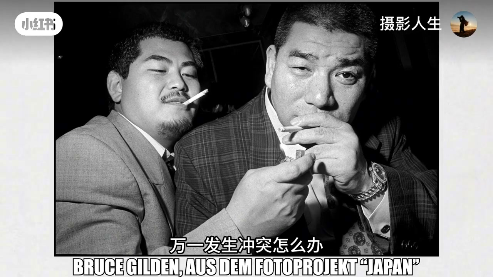
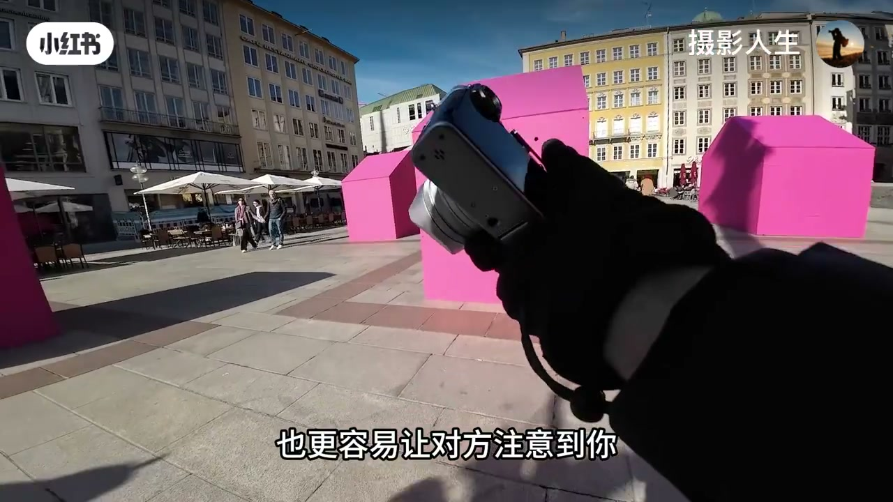
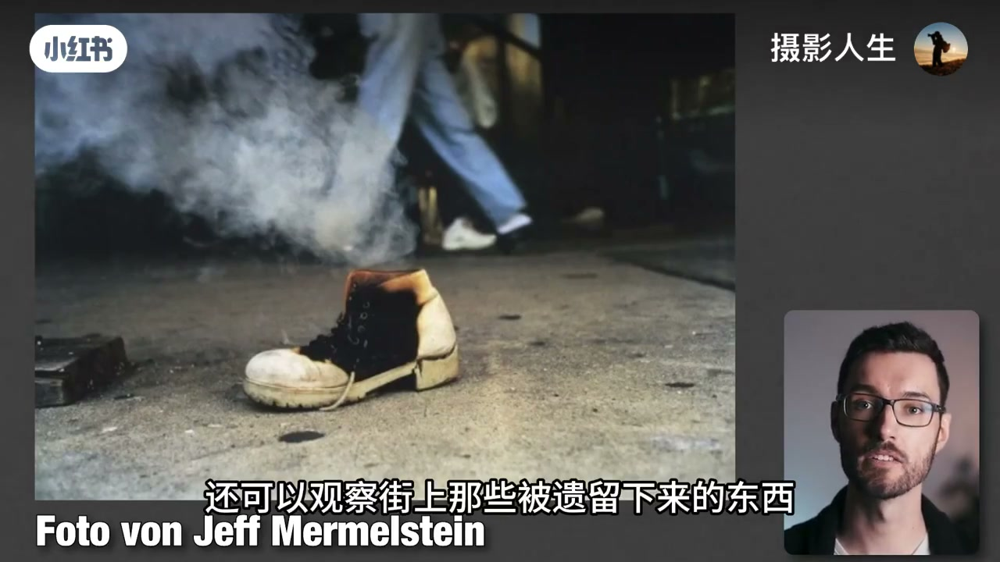
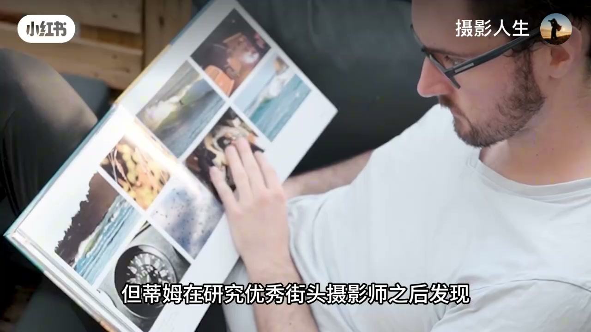
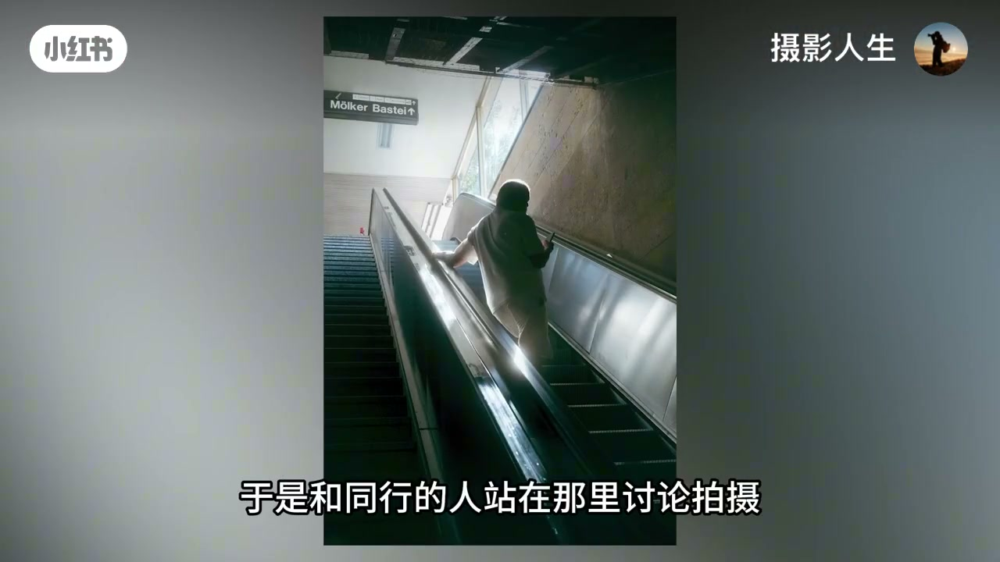
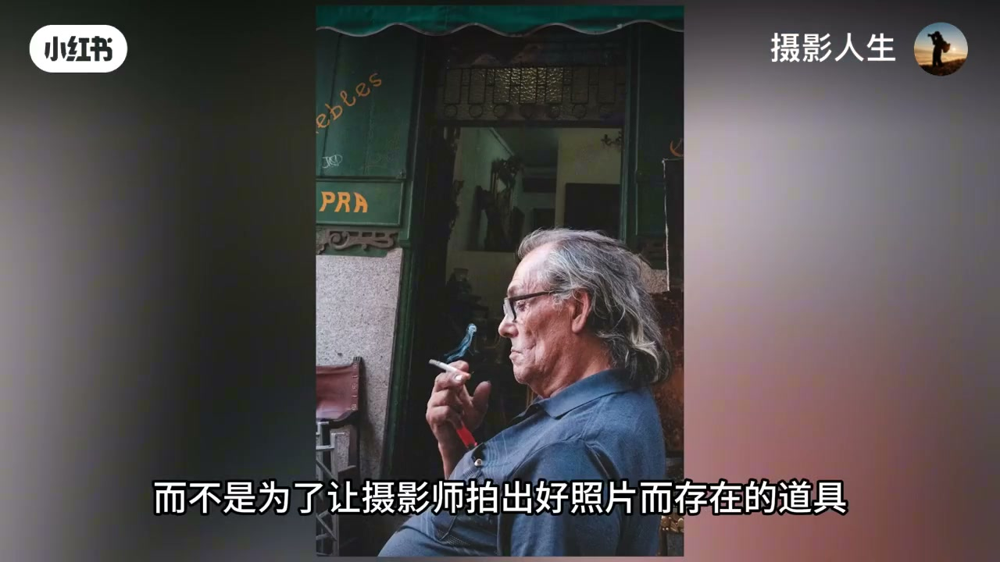
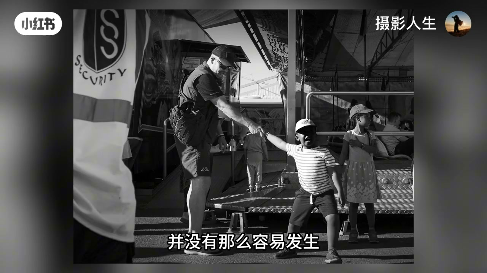

内容要点
账号「摄影人生」用约七分钟，转述拍了十年街头的蒂姆（ASR 偶作「地母/定姆」）给害羞摄影师的降压路径：怕的往往不是街上真发生冲突，而是行动前脑内把最坏结果预演了一遍。三招递进——先当「渔夫」等人入画、再拍影子/倒影等痕迹、最后与同伴同拍——并用尊重守底线。以下为视频观点纪实。
知识结构
想拍却不敢，多半是脑内最坏剧本，而非真实糟糕经历的统计。
别追人；锁光线/结构/背景，等人走进构图再按快门。
影子、倒影、遗物、手部局部也能讲街头故事；同一场景拍透。
群体带来安全感，降低「拍完被质问」焦虑；但不是冒犯通行证。
用真实拍摄经验替换想象恐惧；先迈一步即可。
降压顺序：等人入画 → 拍痕迹 → 结伴练习；真正要克服的常是自己脑内的恐惧。
00:00–00:51害怕的是脑内剧本
天气好、光线漂亮，却端起相机突然不敢：路人经过时脑子先转「被发现怎么办、被质问怎么办、冲突怎么办」，结果一个人没拍就吓回家。
蒂姆也经历过这阶段。她/他后来发现：很多人怕街头，并不是因为真发生过很多糟心事，而是行动前已经把最坏结果预演完了；那些拍了几百上千张却什么都没发生的经历，反而很少有人专门讲。

「并不是因为真的发生过多少糟糕的事情，而是因为他们在行动之前，已经在脑海里把最坏的结果想了一遍。」
00:51–02:55第一招：渔夫式等人入画
街头有两种典型方式：猎人不断移动、锁定目标跟随，决定性瞬间短、突然举机也更容易被注意——新手压力最大。渔夫完全相反：先找值得拍的场景（热闹广场、漂亮光线），定构图、设好曝光对焦，然后等合适的人自己走进画面。
站一两分钟后，你更容易成为环境的一部分：路人觉得「这人本来就在这儿拍照」，而不是「在跟踪我」。蒂姆建议新手优先选人流大的地方——步行街、广场、商场入口、公共交通站点——人越多越好融入。
选位盯三个关键词：光线、结构、背景。等待不是发呆：观察人流路径、检验构图；光漂亮却没人经过就换站位。练习的不只是勇气，还有观察力。


02:55–04:36第二招：先拍人的痕迹
连「等人」都不想做也没关系：街头摄影不等于必须把陌生人的脸拍进画面。留下人的痕迹同样能讲故事——最简单是影子；橱窗、玻璃、积水、车窗做倒影；遗落的鞋、包、衣服暗示故事；还想有人就拍局部（布满皱纹的手、戴手套的手、工作中的手）。
这练习也逼你真正观察。优秀街头摄影师不会好场景只拍一两张就走，而可能四五张甚至更多：换角度、改距离、调构图、等不同的人进入。与其一天扫几十个点，不如把一个有潜力的场景拍透——既降压，也练眼。


04:36–06:15第三招：和同伴一起拍
能较自然地在街头拍摄后，下一步才是真正拍人。群体会带来安全感：一个人举机对着人群，压力全堆自己身上；旁边有两三个伙伴一起讨论光线构图，场景就自然很多。
蒂姆在维也纳火车站入口遇到漂亮光线，与同行站着讨论拍摄——周围有质疑目光，但没人真上前质问。他意识到：很多人怕的不是「拍」这个动作，而是拍完之后会发生什么。结伴能显著降低这类焦虑；没有伙伴可加入俱乐部、社交媒体找同行，甚至自己发起小社群。跟有经验的人出去，还能直接观察他们如何找场景、等人、处理互动。
但结伴不是肆无忌惮的通行证。街上每个人都是真人，不是出片道具；一人拍或一群拍，都要保持基本尊重与礼貌。


06:15–07:20收束：小胜利替换恐惧
三招串起来很简单：先成为场景一部分；还不敢就先拍痕迹；再找同伴适应真实人物互动。你不需要第一天就冲到陌生人面前——有效路径是积累小胜利：第一次拍到路人什么都没发生、第二次拍到漂亮影子、第三次和朋友拍下一组人物。
真正要克服的，很多时候不是街上的人，而是行动前自己制造的恐惧。用真实经验慢慢替代想象中的最坏结果后，走上街头就不再需要那么大的勇气——你不必毫无顾忌，只需先迈出第一步。

「街头摄影真正需要克服的，很多时候并不是陌生人，而是行动之前自己在脑海里制造出来的恐惧。」